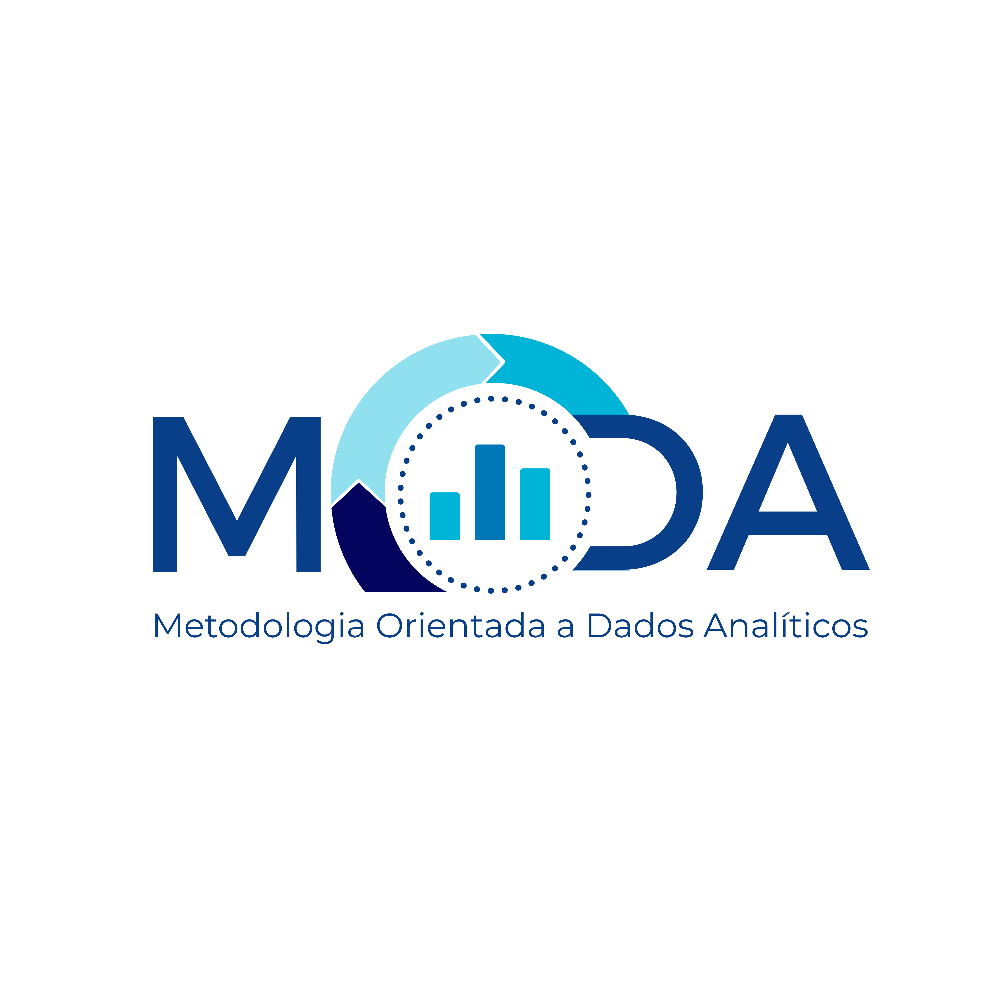
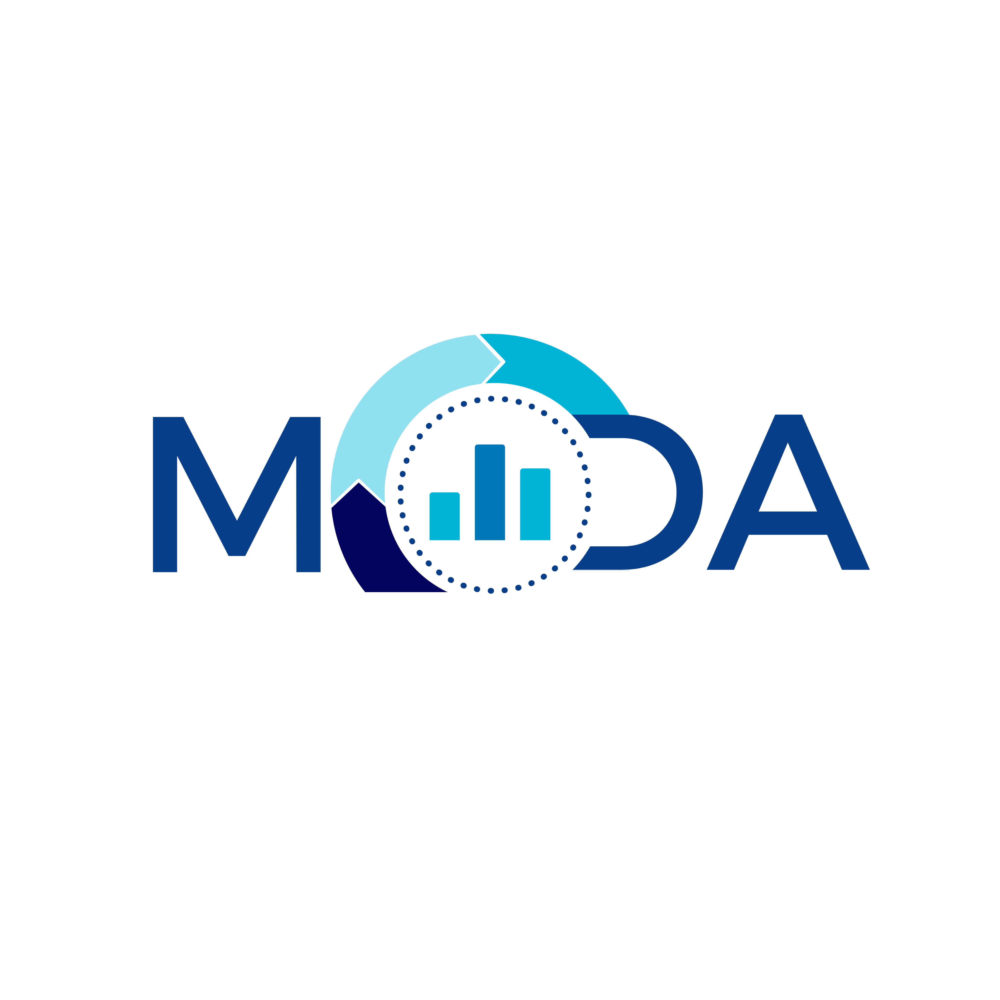
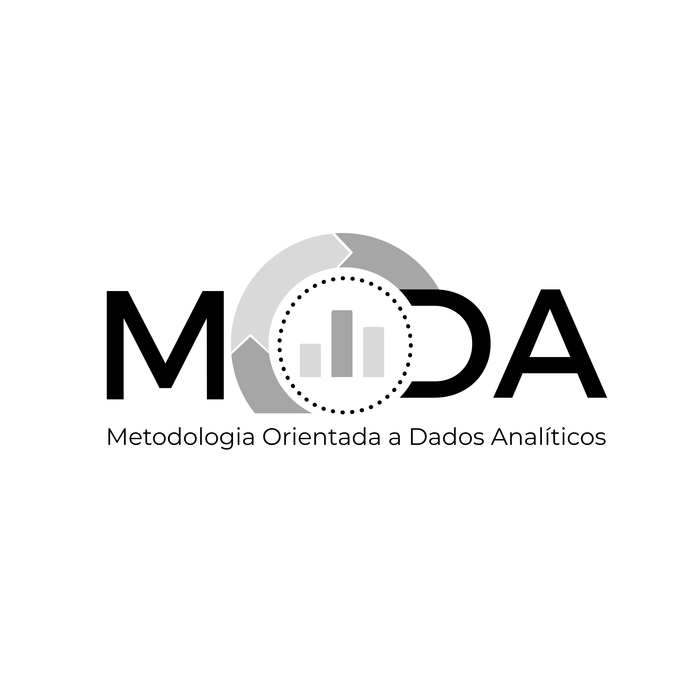
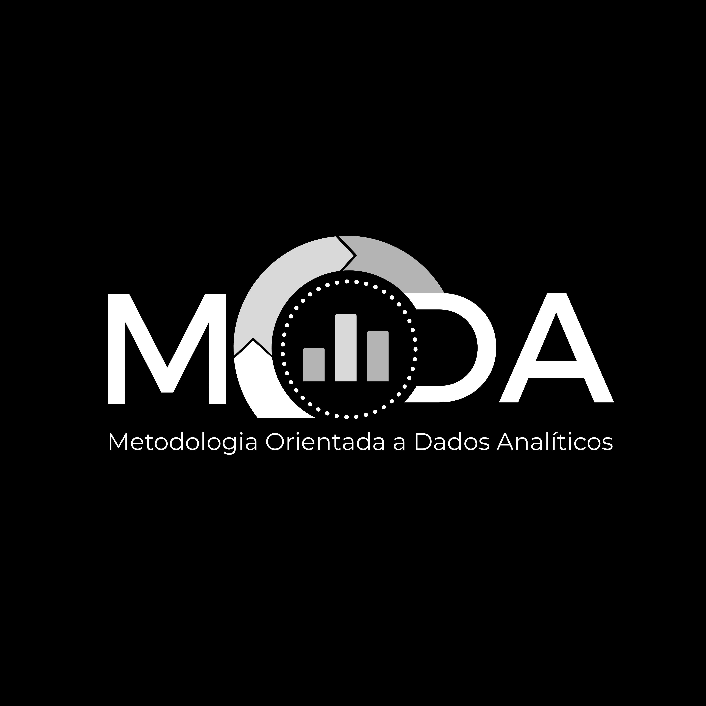
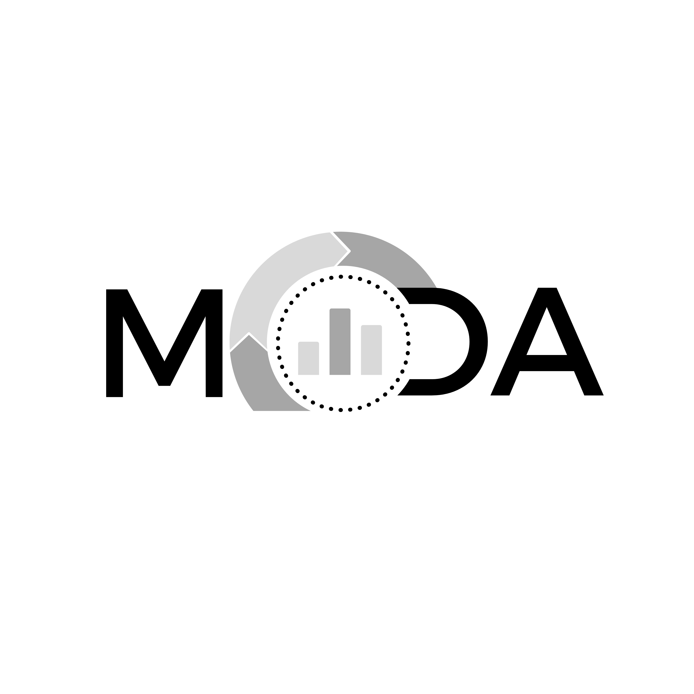

A MODA estrutura o caos dos dados, transformando-os em um ciclo contínuo de melhoria e inteligência para decisões embasadas.

A MODA é o acrônimo para Metodologia Orientada a Dados Analíticos. Embora a sigla forme uma palavra comum, o conceito visual rompe com qualquer ambiguidade, posicionando a marca firmemente no território da gestão, tecnologia e inteligência.
Nosso propósito é estruturar o caos dos dados, transformando-os em um ciclo contínuo de melhoria e inteligência. A marca representa organização, clareza e o fluxo ininterrupto de informações.
A análise de dados nunca para; é um processo contínuo de feedback.
Fontes robustas e geométricas passam a seriedade necessária para o setor governamental e corporativo.
Os tons de azul e ciano evocam clareza, tecnologia e confiança.
O ciclo analítico da MODA é composto por três etapas fundamentais que garantem a transformação contínua de dados em insights estratégicos.
Captura sistemática de dados de diversas fontes, garantindo a integridade e qualidade das informações desde a origem. A base sólida para toda análise subsequente.
Transformação e organização dos dados brutos em informações estruturadas. Limpeza, normalização e preparação para análise avançada.
Extração de insights e padrões através de técnicas analíticas avançadas. Transformação de informações em conhecimento aplicável à tomada de decisões.
O elemento central da marca MODA representa o ciclo analítico em movimento constante, onde o insight de hoje alimenta a estratégia de amanhã.
A letra "O" de MODA é substituída por um gráfico circular composto por setas em movimento, representando as etapas da metodologia: Coleta, Processamento e Análise.
No centro do "olho do furacão", os dados estão protegidos e organizados. As barras crescentes indicam evolução e resultados mensuráveis.
As letras "M", "D" e "A" em azul marinho oferecem base sólida. O uso de caixa alta reforça a autoridade e presença institucional da marca.
Use este fluxo para estruturar o trabalho com dados e transformar cada etapa em valor estratégico.
Defina claramente o objetivo do projeto antes de iniciar a coleta e análise.
Identifique todas as fontes de dados disponíveis e como elas se conectam ao objetivo.
Configure o processamento para garantir qualidade, consistência e rastreabilidade.
Aplique análises que gerem insight e suportem decisões baseadas em dados.
Apresente descobertas com clareza usando dashboards e relatórios visuais.
Faça com que todos os envolvidos compreendam o valor e a direção do projeto.
Acompanhe métricas e resultados para saber se a metodologia está gerando impacto.
Use o ciclo contínuo para ajustar processos e evoluir com base no feedback recebido.
Algumas recomendações simples ajudam a manter a MODA consistente e efetiva em qualquer projeto.
Um processo de dados confiável começa com disciplina e termina com aprendizado contínuo. Escolha ferramentas que favoreçam integrações seguras, automação e escalabilidade.
A MODA é suportada por um conjunto de recursos que simplificam a governança, a execução e a comunicação dos dados.
Armazenamento estruturado para centralizar dados e permitir consultas confiáveis.
Processos automatizados que transformam e atualizam dados de forma segura.
Visualizações claras que tornam o resultado dos dados acessível para todos.
Técnicas que extraem padrões, tendências e oportunidades a partir dos dados.
Regras e controles para proteger os dados e manter a confiança na informação.
Comunicação visual que destaca o valor do dado sem comprometer a legibilidade.
A versatilidade do MODA permite sua aplicação em diversos suportes sem perder a identidade e o reconhecimento visual.
Logotipo completo com tagline "Metodologia Orientada a Dados Analíticos". Ideal para capas de relatórios e documentos oficiais.

Versão sem tagline para redes sociais, rodapés e espaços reduzidos onde a leitura completa ficaria comprometida.

Para impressões em uma cor ou documentos em preto e branco, mantendo a integridade visual da marca.

Obrigatória para aplicações sobre fundos escuros ou fotos, garantindo contraste e legibilidade em qualquer contexto.
A paleta do MODA é um estudo monocromático de azuis, criando uma escala tonal que representa a profundidade da análise de dados.
Base mais escura da marca. Representa autoridade, profundidade e estabilidade institucional.
Variação institucional ideal para fundos corporativos e materiais impressos.
O equilíbrio entre o técnico e o corporativo. Usado para subtítulos e destaques.
Azul vibrante que traz modernidade. Usado em ícones e gráficos para chamar atenção.
Representa o "insight", a clareza e o futuro. Usado nos arcos do ciclo analítico.
Fundamental para o respiro e contraste. Usado como fundo e versão negativa.
A marca MODA foi desenhada para viver tanto no ambiente digital quanto no físico, transmitindo pertencimento e qualidade em cada aplicação.
A sobriedade do azul marinho permite aplicações elegantes em materiais de escritório. Em sacolas, cadernos e crachás, a marca transmite pertencimento a um grupo seleto.
Nos painéis e apresentações, a marca atua como um selo de qualidade. O uso dos tons de azul claro em telas ajuda a destacar a informação sem cansar a vista.
A presença da marca em telas grandes de reuniões reforça que as decisões tomadas ali são embasadas em dados e metodologia comprovada.
A MODA une governança, análise e design para transformar dados complexos em ações práticas e decisões confiáveis.
Organizar o fluxo de dados em um ciclo contínuo, tornando a informação acessível para gestores, analistas e equipes técnicas.
Reduzir ciclos de tomada de decisão e aumentar a confiança nos dados usados para planejamento e controle.
A evolução da MODA passa pela implementação de regras, padrões e mecanismos que garantem dados confiáveis e reutilizáveis.
Defina papéis, responsabilidades e fluxos claros para o ciclo de vida dos dados.
Use feedback e resultados reais para ajustar o processo e manter a metodologia sempre atualizada.
A apresentação visual deve reforçar a clareza dos dados, tornando cada insight mais fácil de entender e usar.
Layouts limpos, tipografia legível e hierarquia clara garantem a compreensão rápida das informações.

Conteúdos e indicadores organizados em blocos visuais que acompanham o ciclo de dados.
O uso consistente da paleta azul e dos ícones reforça confiança em relatórios e dashboards.
Adote a MODA e comece a estruturar o caos dos seus dados em um ciclo contínuo de melhoria e inteligência estratégica.
Voltar ao Topo